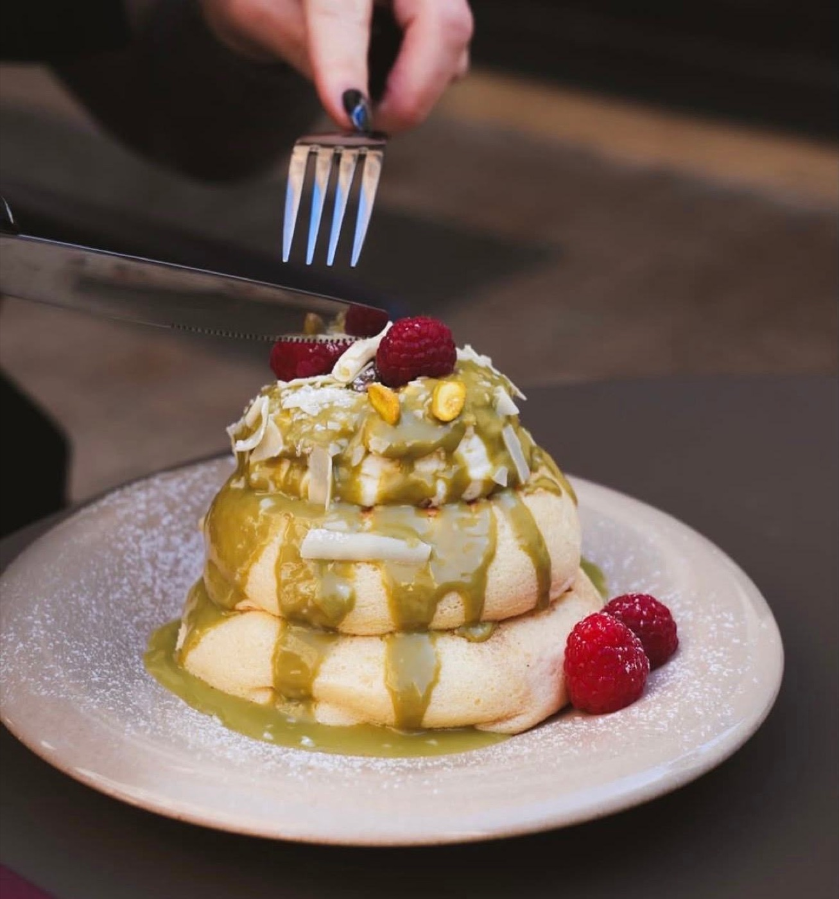
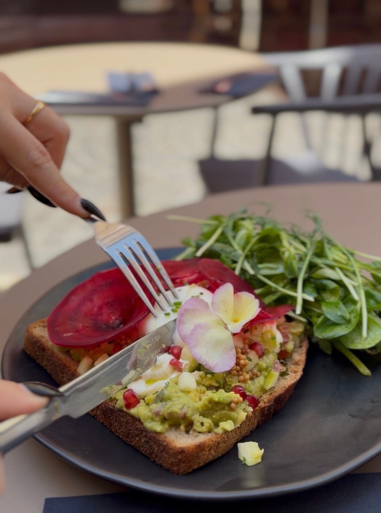
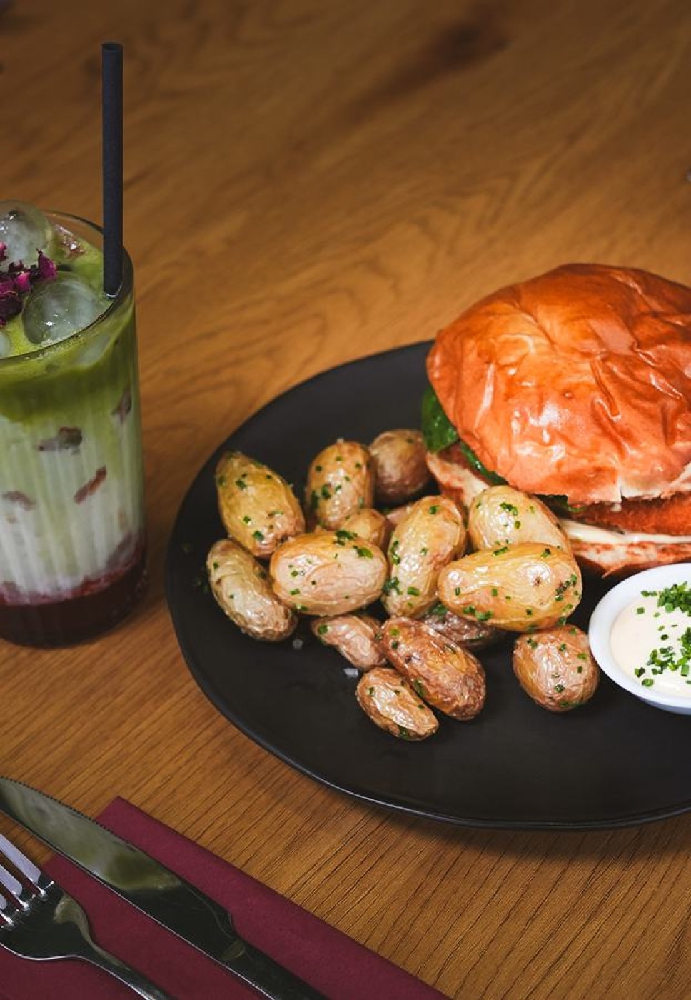
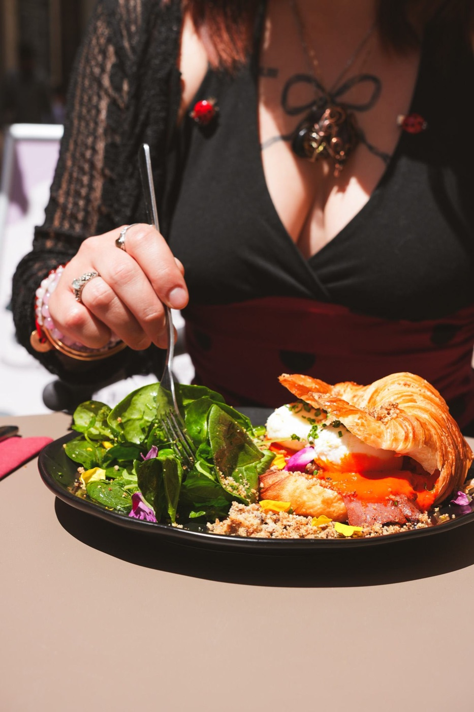
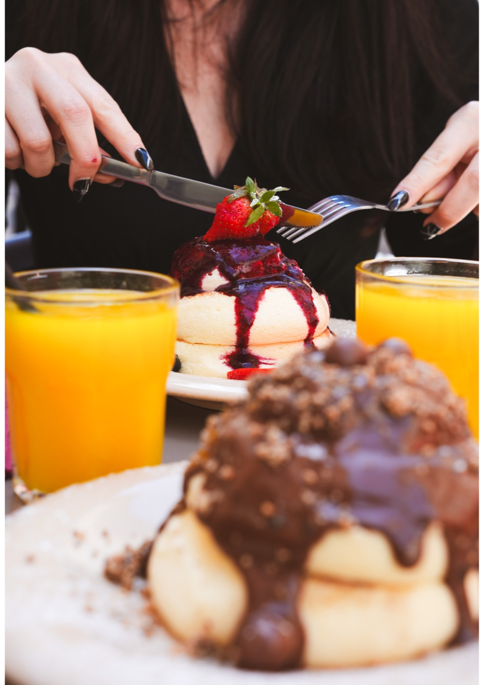
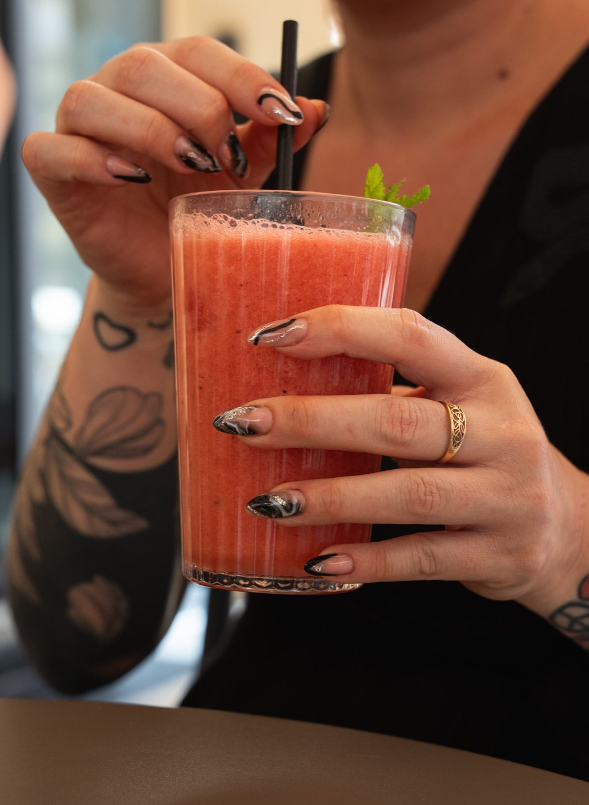
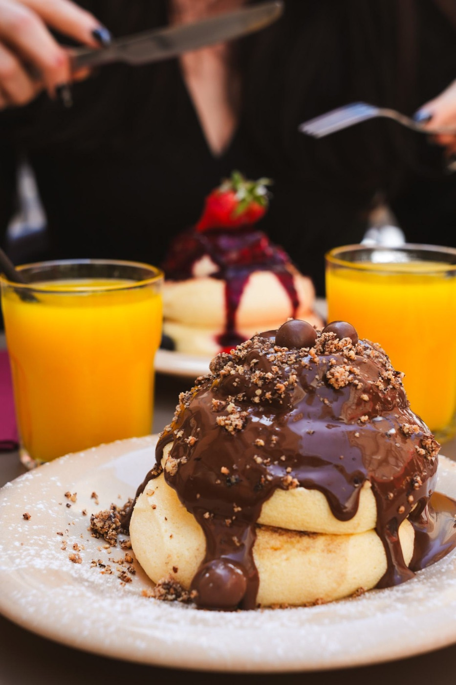
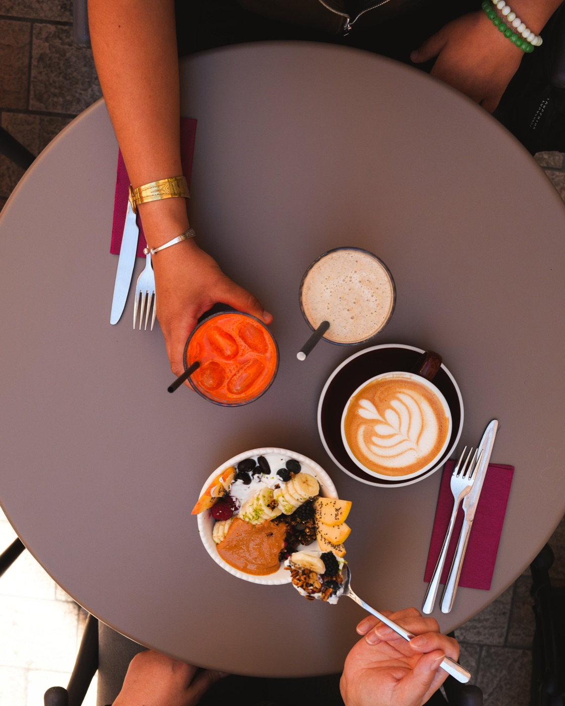

ANCRÉE, SAIN & AUTHENTIQUE








Kōsei, c'est le caractère. Une adresse née au 11 rue Haxo pour ceux qui ne veulent plus choisir entre manger sain et se faire plaisir.
Ici, on ne fait pas de compromis : notre café est de spécialité, nos jus sont pressés minute et nos smoothies se boost selon tes besoins avec du collagène ou de la protéine.
Et parce que la gourmandise est un besoin réel, nos fluffy pancakes (aussi appelés pancakes soufflés) répondent présent. Faits minute et ultra-aériens, ils sont vite devenus une référence pour qui cherche le meilleur brunch à Marseille.
Brunch. Café. Cuisine. Bienvenue chez Kōsei, au cœur de Marseille.